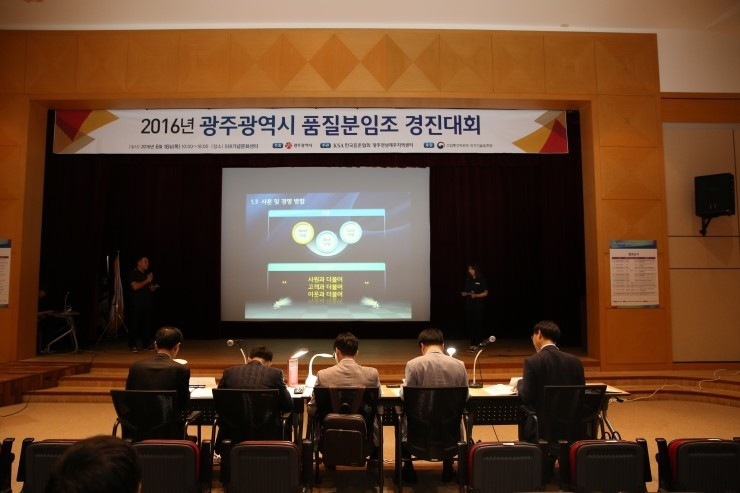
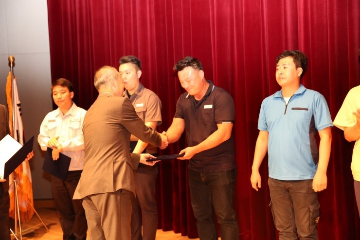
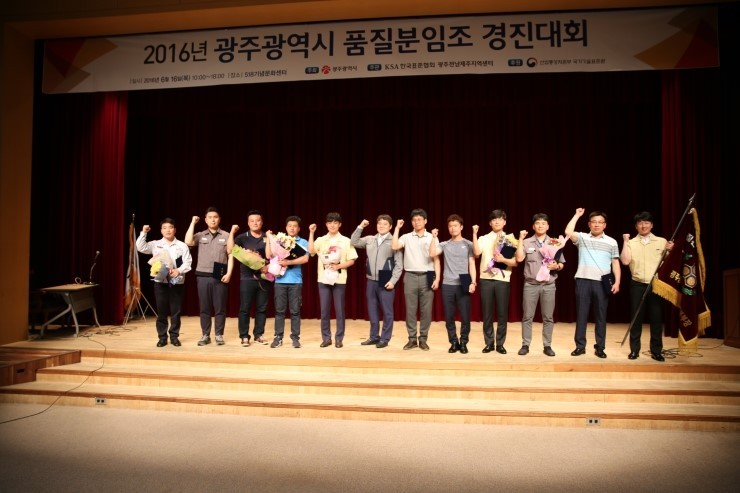
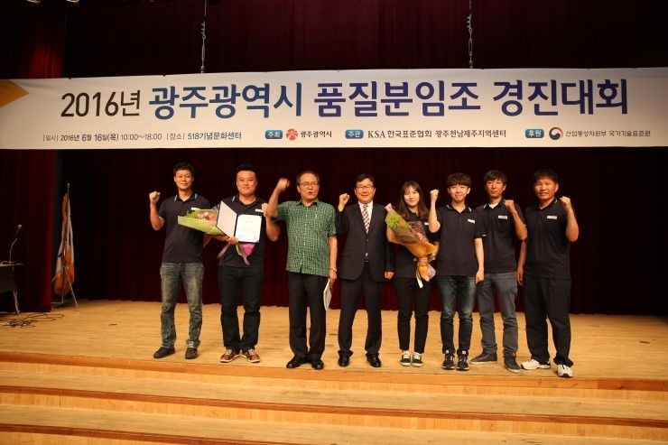
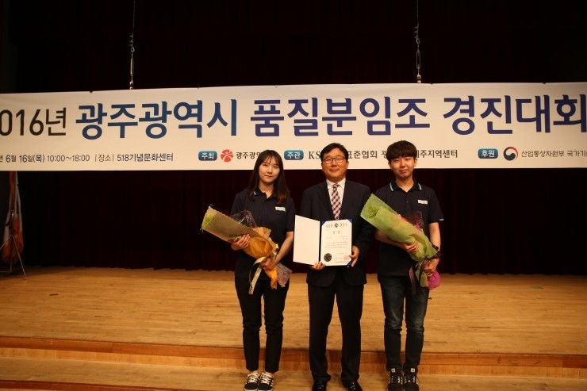
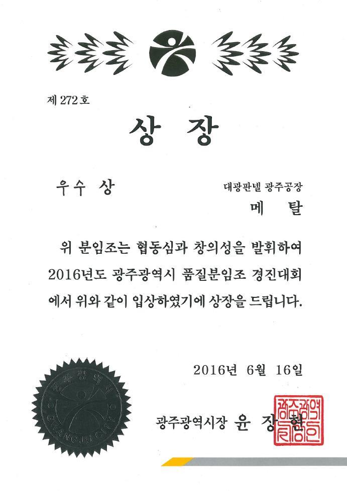

(주)대광판넬
2016 광주광역시 품질분임조 경진대회
3년 연속 우수상 수상
(주)대광판넬 광주공장 '메탈' 분임조가 2016년 광주광역시 품질분임조 경진대회에서 3년 연속 우수상을 수상했다.
광주공장의 '메탈' 분임조는 '판넬부착강도 개선으로 부적합품률 감소'의 주제로 삼성전자, 기아차 등 대기업 품질분임조 속에서 어깨를 나란히 하며 중소기업도 기술력으로는 절대 뒤질수 없음을 보여주었다.
(주)대광판넬은 이번 광주광역시 품질분임조 경진대회에서 우수상을 수상하여 오는 8월 29일 개최되는 전국대회 진출권을 획득, 3년연속 대통령상 수상이라는 쾌거를 기대하고 있다.






- 분임조명 : 메탈 (발표주제 : 판넬부착강도 개선으로 부적합품률 감소)
- 일 시 : 2016.06.16 (목)
- 장 소 : 518기념문화센터
- 주 최 : 광주광역시
- 주 관 : 한국표준협회
| ㈜대광판넬 광주공장 | 우수상 |
기아자동차 광주공장 | 우수상 |
| 한국가스기술공사 전남지사 | 우수상 |
| 한국전력공사 광산지사 | 우수상 |
| 삼성전자 광주사업장 | 우수상 |
| 금호타이어㈜광주공장 | 우수상 |
| 삼성전자㈜ 광주사업장 | 최우수상 |